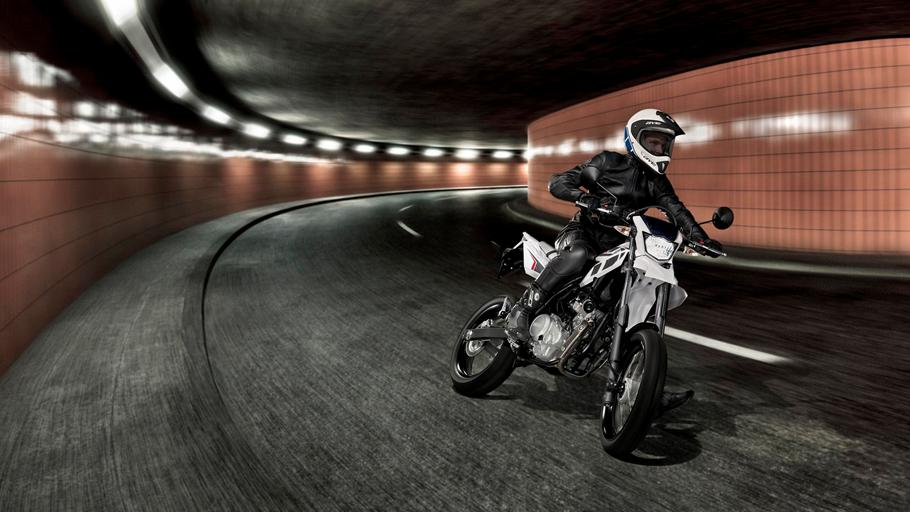
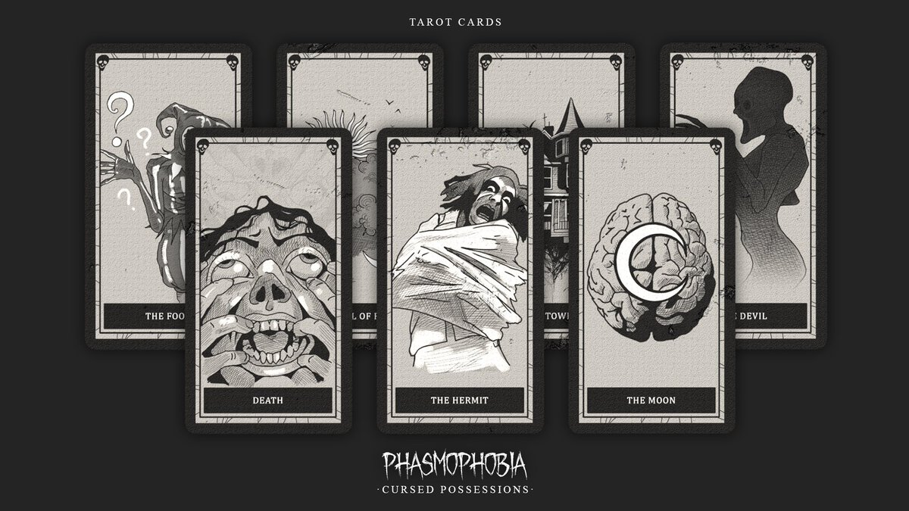
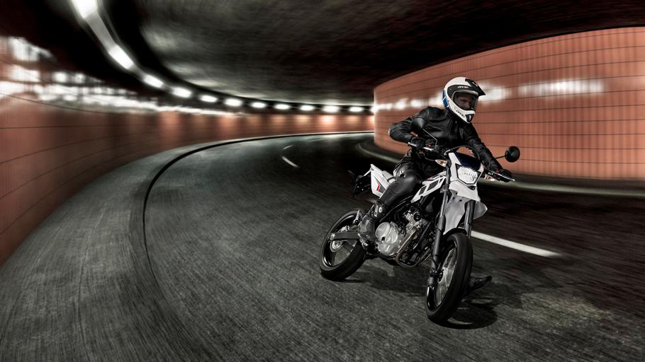
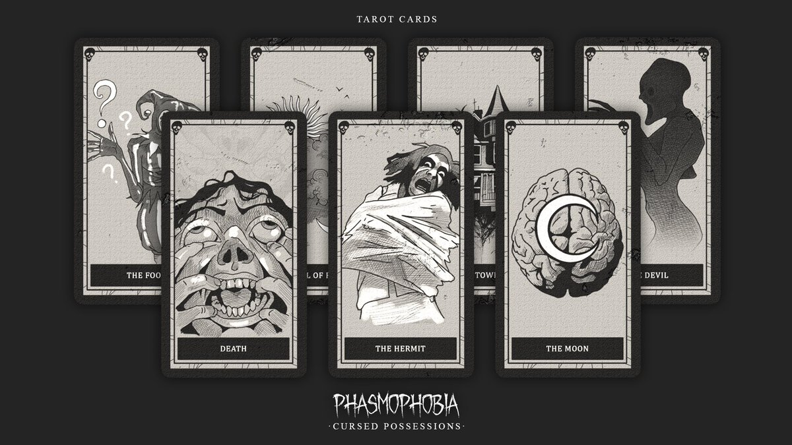
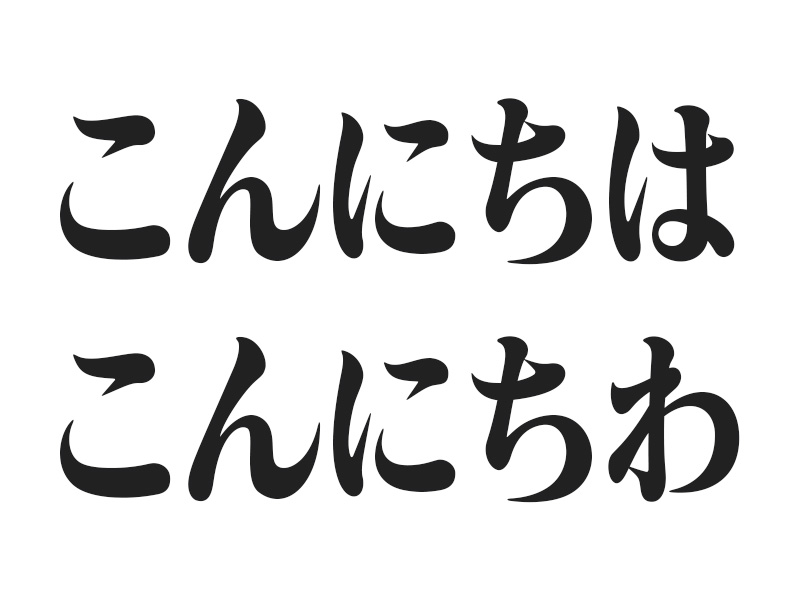

Om mig
Hej! Jag heter Neo Babic och är Teknik student på NTI Odenplan. Jag går inriktning programmering och webbutveckling. Denna hemsida är mitt första projekt!
Mina hobbys
Mina hobbys nu är för det mesta spel och tennis, men jag gillar att köra motorcykel och hänga med vänner.
 



Skolan
Skolan jag går i nu har inriktning Informations och medieteknik. Just nu så är jag i andra året i gymnasiet och valde japanska som individuella val.
